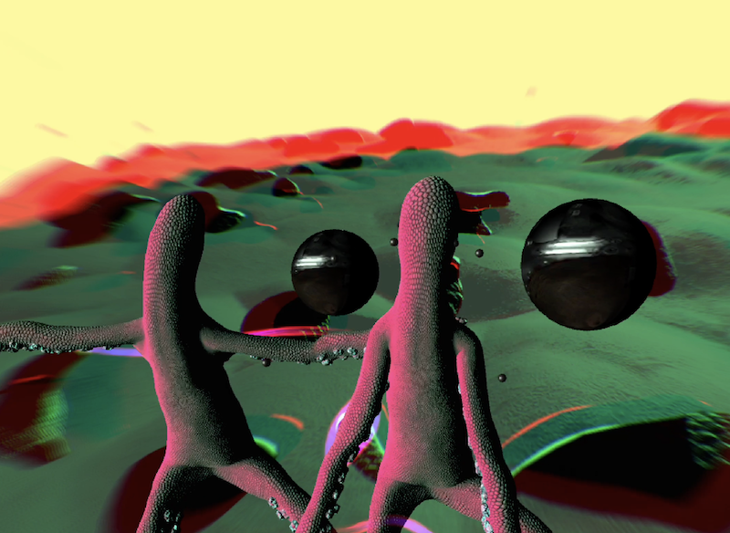
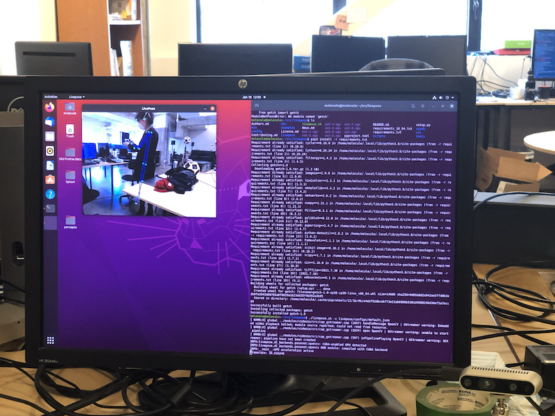
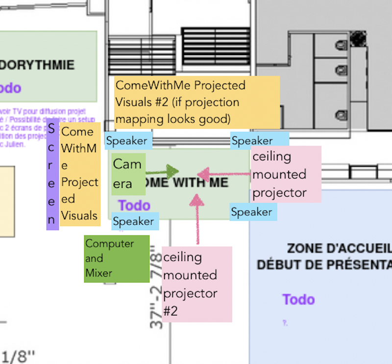

Come With Me
Who has never felt alone?
ComeWithMe is a playful virtual exploration of the spaces between people. ComeWithMe translates your physical movements into a strange virtual world of animated sculptural forms and virtual interactions. Using a camera, AI-based body sensing (LivePose), projection mapping, and immersive sound, ComeWithMe explores how we get closer to each other, how we connect, and how we sometimes fail to connect with the people around us.
ComeWithMe builds on my previous work (Closer, Common, Follow) on the themes of connection and collaboration and invites people to come together and play in physical and virtual space.

Why this matters: technology and connection
Over the last 20 years, we have watched the rise of social media giants, and seen the act of becoming a “friend” or “connecting” with someone reduced to a click of a button. These days, we are relentlessly connected and surveilled through technology. Underlying this superficial connection is a growing loneliness. ComeWithMe explores relationships through the lens of computer vision, a field of artificial intelligence that helps us to derive meaningful information from cameras.
ComeWithMe asks: how are you connected to the people around you? How do you reach for people, and how do they reach for you?
What is it like to experience ComeWithMe
ComeWithMe is set up in physical space. A strange virtual world is projected on the walls around you creating an immersive feeling. You are represented by a strange aquatic avatar. When you move your arms you notice that the tenticles of one of the avatars wobble too. You can move your avatar through the world by moving your body, and you can create temporary rope-like connections with others by moving closer to them and reaching for them. You can catch or evade flying spheres. Together with other people you navigate the strange world.
Metalab Residency
I made the above prototype of ComeWithMe during a 6-month residency at the Metalab at the SAT in 2022, using the Metalab-developed open source pose estimation tool (LivePose) and open source projection-mapping tool (Splash). I’ve always loved doing residencies. There’s no better way to immerse in a community and become part of a world than to literally dive in.
I’m dreaming of developing ComeWithMe further through deeper experimentation.
Currently, ComeWithMe is a playful, immersive, installation that is projected onto two adjoining walls in the installation area, creating a visual sense of immersion. A special LiDAR depth-sensing camera is pointed into the area. Audio speakers are be arranged around the installation area, creating a spatial soundscape.
Without participants, ComeWithMe is a lonely world, with soft purple lighting, subtle organic plant-like shapes, and soft, deeply reverberating music.
When participants enter the installation area, ComeWithMe comes to life. Each participant in the installation area is represented on the screen by a vibrant, organic, humanoid “character” that moves its limbs as the participant does, and floats around the immersive world, like a virtual avatar.
As the characters reach for things in the virtual world, flowing ropes emerge from their hands. When two participants reach for each other, they become connected by flowing strands of multicoloured rope and matching melodic waves of ambient sound.
Participants try to build these connections (flowing digital ropes) by reaching for each other. Larger groups can form or people can pair into smaller groups. By mutually and repeatedly reaching for each other, participants can strengthen connections, which otherwise visibly and audibly decay over time. The decay are slow and gently rhythmic, inviting gentle dance-like motion from the participants.
Two kinds of small sculptural objects float past the participants periodically: some sharp and bright, some rounded and pulsing. Participants avoid the sharp objects as these sever connections and temporarily remove all colours from a cluster. Participants reach for the rounded, pulsing objects as they create delightful washes of colour and sounds.
An ambient, sonically immersive soundscape provides a subtly shifting audio backdrop as connections form and decay.
Each participant group brings its own relational presence to ComeWithMe, no two encounters are the same because, at its core, it explores the space between specific people in a specific moment in time. I see this space as a space of incredible possibility. How does it work? How can it be activated? What happens when a whole network of these spaces becomes active? What changes occur outside of and within us when we feel connected with the people around us?
Goals
Having developed a prototype of ComeWithMe in 2022, my goals for 2023 are related to deeper experimentation. It's wonderful to have a working prototype because every direction from here is an improvement.
My aim is to use my current prototype of ComeWithMe as a scaffold and playground for research into connection while experimenting with the technologies and tools at the Metalab. The project may shift drastically as I experiment, take risks, and learn.
Accessibility
I am interested in making ComeWithMe accessible to as many people as possible. I explore accessibility through testing with diverse audiences and make design decisions accordingly about elements like speed/slowness, forgiveness of control (rather than precision), communicating critical information through both sound and sight (allowing people to engage using only one or only the other), and reducing cognitive load. All that said, accessibility is an ongoing process and is never done.
Open Source
ComeWithMe uses open source tools developed by the MetaLab at the SAT: LivePose and Splash.
Community
My work is always made in community. I like to learn and teach as I learn. The prototype was made by me, but with the support of my commmunity. Huge thanks to Julia Evans (helping me with OSC) Steven Sych (technical art and making things pretty), Kristian North (sound design and making things sound good), Jonathan Carroll (teaching me Unity stuff), Elder Nina de Shane, Ida Toft, Mike Daoust (Unity help), Adam Streck (Unity help), Aaron Levin, Matthew Gooding and Monique Gurule (daily support), Luis Miguel Barbosa Costa Leite (conversations about puppets), George Batchelor, Cabbibo (rotation conversations), Leslie Predy and Jenn Kitagawa (testing). To the people of the Metalab, especially Michal Seta (support throughout), Alexandra Marin, Édith Viau, Emmanuel Durand, Mourad Bennacer, Christian Frisson, Nicolas Bouilllot, Farzaneh Askari, Thomas Piquet, Eduardo Meneses, Émile Ouellet-Delorme, Victor Comby, Elies Jurquet, and Eva Decorps.